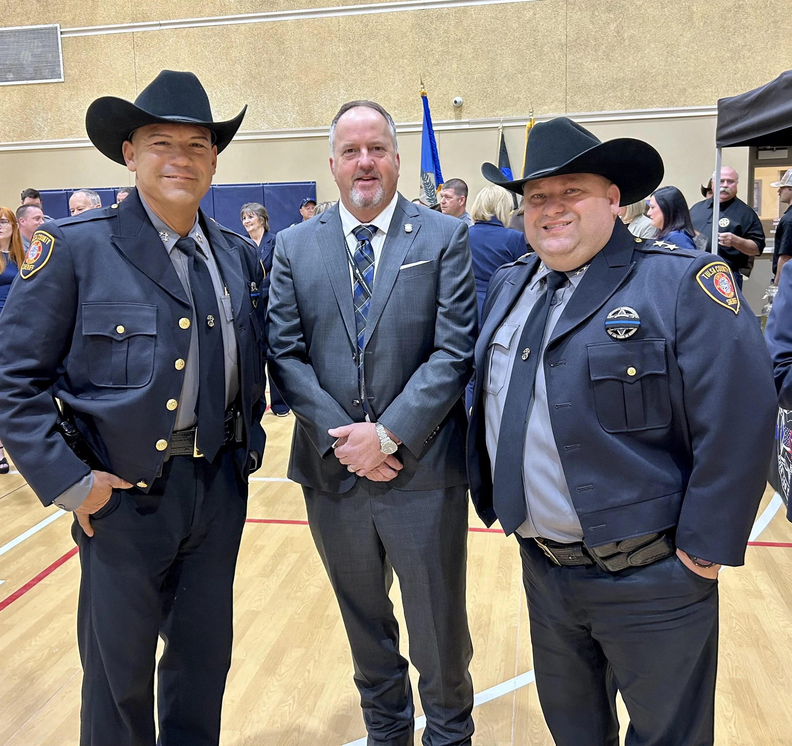

Photo from a public event; not an endorsement.
Public Safety
Focus on supporting law enforcement and public safety resources as a campaign priority.
Read more →Official Campaign Website
Learn about Lonnie Sims’ experience in public service and how to get involved with the campaign.
Sign up for email updates (minimal info only).

These are presented as campaign priorities unless specifically noted as part of a documented record.
Focus on supporting law enforcement and public safety resources as a campaign priority.
Read more →
Emphasizing roads, bridges, and community resilience—paired with experience discussing flood protection efforts.
Read more →Messaging on border security and related policy priorities as presented in campaign materials.
Read more →Lonnie Sims’ public service includes local leadership in Jenks, service in the Oklahoma House, and service as Tulsa County Commissioner for District 2.

This site’s factual statements are compiled from the sources below. Where campaign messaging is included, it is labeled as a campaign priority.
Last updated: